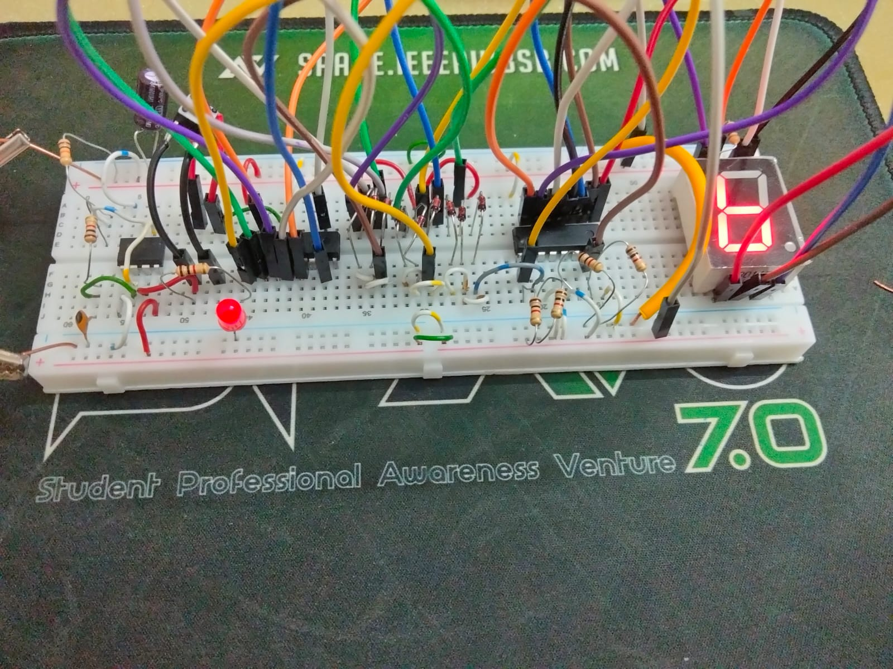
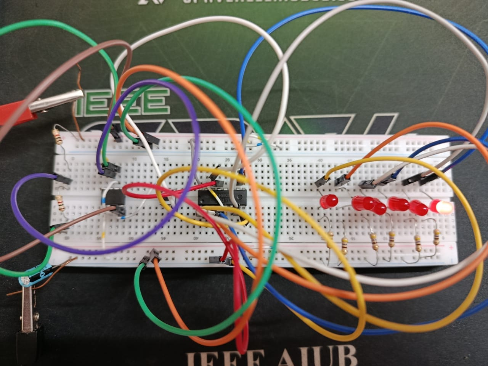

Digital Dice Roller With 7-Segment Display
The Digital Dice Roller with a 7-Segment Display is a hardware-based electronic project that simulates the functionality of a traditional dice using digital components. Instead of rolling a physical dice, the system generates numbers from 1 to 6 and displays the result on a 7-segment display.
The circuit uses a 555 Timer IC configured as an astable multivibrator to generate clock pulses. These pulses drive a counting circuit that changes the numbers rapidly. When the user presses a push button, the counting stops and the display shows a random number, simulating the behavior of rolling a real dice.
Key Components
- 555 Timer IC
- 7-Segment Display
- Counter IC
- Resistors
- Capacitors
- Push Button
- Breadboard and Connecting Wires
This project demonstrates the practical application of timer circuits, digital counters, and display interfaces in electronic system design and educational electronics experiments.

Digital Dice Roller With Red LEDs
The Digital Dice Roller with Red LEDs is a hardware-based electronic project that simulates a dice using LED indicators. Instead of using a 7-segment display, multiple red LEDs are arranged to represent the face patterns of a traditional dice.
The system uses a 555 Timer IC to generate clock pulses, which are sent to the CD4017 Decade Counter IC. The 4017 IC sequentially activates the LEDs, creating rapid changes in the LED patterns. When the user presses the button, the circuit stops at a random LED configuration representing numbers from 1 to 6, similar to rolling a real dice.
Key Components
- 555 Timer IC
- CD4017 Decade Counter IC
- Red LEDs
- Resistors
- Capacitors
- Push Button Switch
- Breadboard and Connecting Wires
This project demonstrates the practical use of timer circuits, decade counters, and LED-based output systems in digital electronics and hardware-based number generation applications.